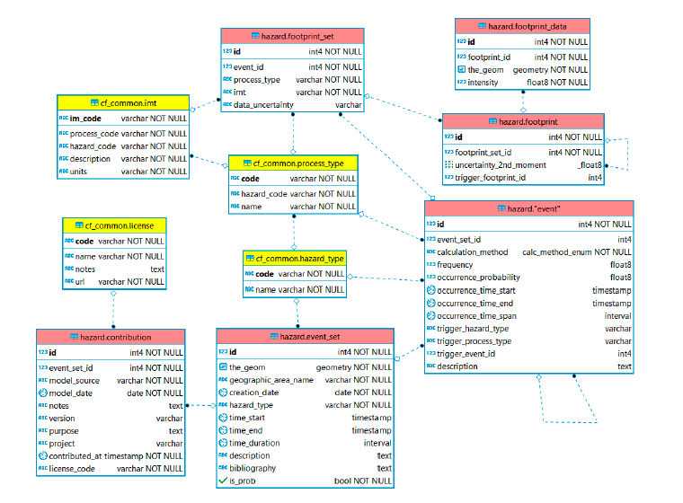

Hazard DB schema
The hazard schema stores hazard scenario footprints and probabilistic hazard maps for multiple hazards. Hazards can be further defined into process types, each with a defined intensity unit as in cf_common.imt. For example, earthquake hazard may be represented as ground shaking, liquefaction or ground displacement.
The data structure contains entities nested as follows:
Event_set ( Event ( Footprint_set ( Footprint ( Footprint_data) ) ) )
The "Event set" stores one or more scenarios for a specific hazard. One "Event" represents one specific scenario (e.g. RP100, or one historical event). For each Event, one more "Footprint_set" can be available. This is a container for one or several "Footprints" where each is one possible realisation of an event. Uncertainty in the event characteristics and hazard footprint can be represented explicitly, through the inclusion of multiple events in an event set, and many footprints per event. Hazard footprints can be linked to another 'trigger event' footprint to represent cascading hazards. Hazard footprints can be assigned an occurrence frequency, and can represent a scenario footprint or return period hazard map. Inclusion of an event start and end time enables description of long-duration events.

ERD (hazard schema): hazard table contents (red) and links to common tables (yellow).Table: hazard.event_set
The "event.set" entity contains information on a set of events for a given area, with event set duration, description, bibliography and defines the event set as probabilistic or deterministic.
| Req | Field name | Type | Reference table | Description |
|---|---|---|---|---|
| * | id | INT | Unique number ID | |
| * | hazard_type | VARCHAR | cf_common.hazard_type | Unique 2-char code |
| * | creation_date | date | The date of creation [ISO 8601 format] | |
| time_start | timestamp | The time at which the modelled scenario(s) starts [ISO 8601 format] | ||
| time_end | timestamp | The time at which the modelled scenario(s) ends [ISO 8601 format] | ||
| time_duration | interval | The extent of the time period covered by the events included in the current scenario hazard analysis [ISO 8601 format] | ||
| description | TEXT | General information about this specific scenario hazard analysis | ||
| bibliography | TEXT | Title and authors of studies containing relevant information | ||
| * | is_prob | BOOL | Wheter the event set represents a probabilistic (TRUE) or a deterministic (FALSE) analysis. | |
| * | the_geom | GEOM | Associated geometry data (bounding box of data) |
Table: hazard.event
The "Event" entity contains information about one specific scenario or hazard map included in an "Event Set". The information comprises event duration, occurrence probability or frequency, the hazard and process type, a link to a possible triggering event (for cascading events) and a text description for more context about magnitude, for example.
| Req | Field name | Type | Reference table | Description |
|---|---|---|---|---|
| * | id | INT | Unique number ID | |
| * | event_set_id | INT | hazard.event_set | Unique number ID of source exposure model |
| * | calculation_method | ENUM | The methodology used for the calculation of this event | |
| frequency | FLOAT | The frequency of occurrence of the present event (for the reference period see occurrence_time_span or occurrence_time_start and occurrence_time_end). | ||
| occurrence_probability | FLOAT | The probability of occurrence in a given time interval defined either through the occurrence_time_start and occurrence_time_end or through the occurrence_time_span parameter. [float, adimensional]] | ||
| occurence_time_start | timestamp | The start date (and possibly time) of the time period used to specify either the frequency or the occurrence_probability [ISO 8601 format] | ||
| occurence_time_end | timestamp | The end date (and possibly time) of the time period used to specify either the frequency or the occurrence_probability [ISO 8601 format] | ||
| occurence_time_span | interval | The duration (years) of the period used to specify either the frequency or the occurrence_probability | ||
| trigger_hazard_type | VARCHAR | cf_common.hazard_type | Hazard type that triggered the event | |
| trigger_process_type | VARCHAR | cf_common.process_type | Process type that triggered the event | |
| trigger_event_id | INT | The ID of a event which is trigger for the simulation of the corresponding footprints | ||
| description | TEXT | Provides additional information about this specific event |
Table: hazard.footprint_set
The "Footprint set" entity contains a sub-group of the "Footprints" computed for an "Event"; all the "Footprint" in a "Footprint Set" have the same unit of measure, represent the same process type and their uncertainty is described in a homogenous way. Every "Footprint Set" instance will have the following attributes.
| Req | Field name | Type | Reference table | Description |
|---|---|---|---|---|
| * | id | INT | Unique number ID | |
| * | event_id | INT | hazard.event | The event.id parameter to which this footprint is associated |
| * | process_type | VARCHAR | cf_common.process_type | The typology of hazard process |
| * | imt | VARCHAR | Intensity measure types | |
| data_uncertainty | VARCHAR | This attribute describes the typology of uncertainty |
Table: hazard.footprint
The "Footprint" entity contains information on a specific realisation of an "Event". The uncertainty of a particular event is captured either by the construction of many footprints or by a single footprint which contains information about uncertainty.
| Req | Field name | Type | Reference table | Description |
|---|---|---|---|---|
| * | id | INT | Unique number ID | |
| * | footprint_set_id | INT | hazard.footprint_set | The footprint_set.id parameter to which this footprint is associated |
| trigger_footprint | INT | |||
| uncertainty_2nd_moment | FLOAT |
Table: hazard.footprint_data
The "Footprint_data" entity contains the footprint data: the value of intensity according to the intensity measure (IMT) described in "Footprint set", and the point location of the intensity value.
| Req | Field name | Type | Reference table | Description |
|---|---|---|---|---|
| * | id | INT | Unique number ID | |
| * | footprint_id | INT | hazard.footprint | The footprint.id parameter to which this footprint data is associated |
| * | the_geom | GEOM | Associated geometry data (point location) | |
| * | intensity | FLOAT | The hazad process intensity value in the IMT described in "Footprint set" |
Types
| ENUM name | Types | Description |
|---|---|---|
| calc_method_enum |
|
Type of calculation method applied to produce hazard footprint. |